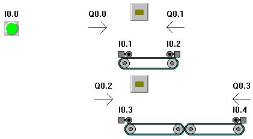
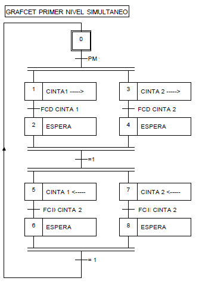
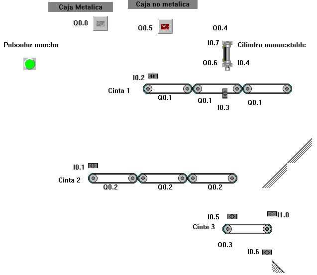

GRAFCET SIMULTANEO.
Cintas
simultaneo 1
(resuelto)
En la siguiente instalación las cajas depositadas sobre la
cinta se mueven de la siguiente manera:
- Depositamos dos cajas sobre
la cinta
manualmente.
- Activamos el pulsador
- Las cajas se desplazan hacia
la derecha
- Cuando las dos cajas estan
en la derecha
vuelven a su posici\u00f3n originial
- Cuando las dos cajas estan
en su posici\u00f3n
original y activamos el pulsador se repite el ciclo.
Esquema de la instalación


Solución
aportada por Francisco Javier Lucas Lorenzo
Cintas simultaneo 2 (resuelto)
Funcionamiento:
Al pulsar Marcha salen dos cajas
Cae una caja a la cinta 1 y se
pone en marcha
la cinta 2.
Cae una caja a la cinta 2 y se pone en
marcha la
cinta 2
La cinta 1, Se detiene al llegar al
cilindro
El cilindro golpea la caja
Cuando el cilindro este en su posición
original
se pone en marcha la cinta 1.
Al caer la caja, la cinta 1 se para.
Al caer la caja met\u00e1lica la cinta 2
se para.
Cuando las dos cajas est\u00e1n en al
cinta 3 esta
se pone en marcha.
Caen de la cinta 3, y si volvemos a
pulsar repetimos
el ciclo.

Solución
aportada por José Manuel Sanchez